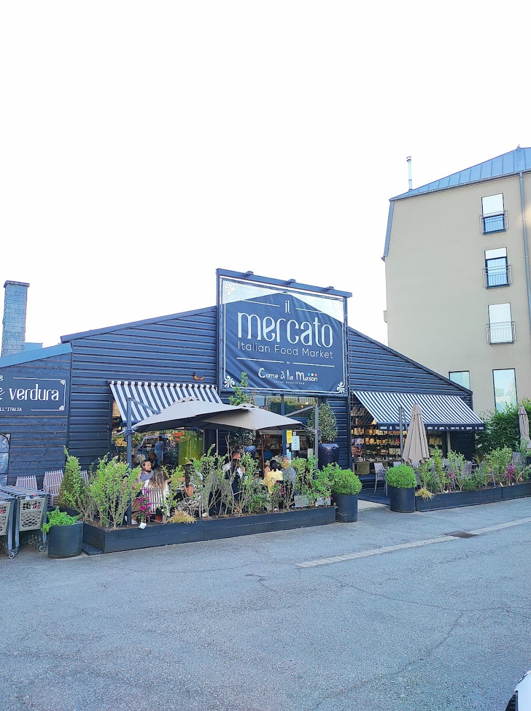
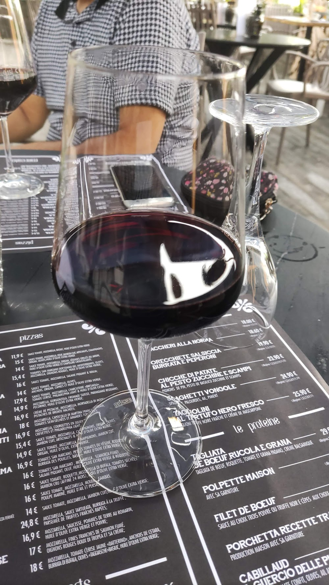
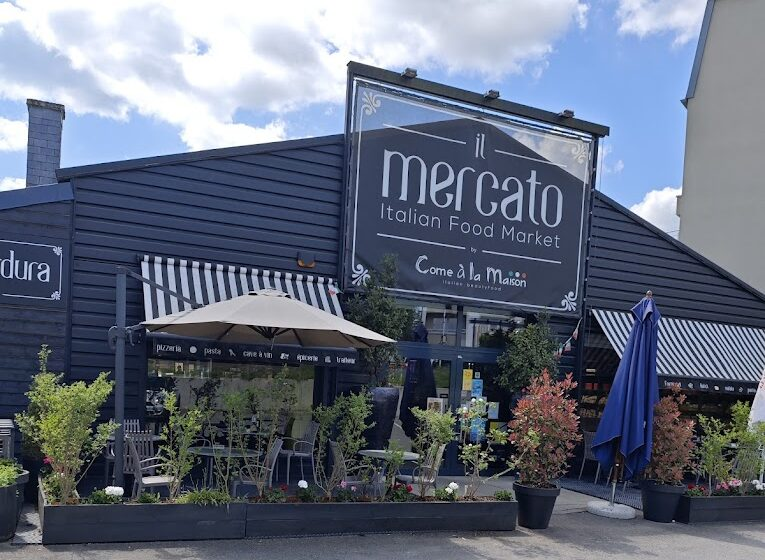

Rayon 01
Pizzeria
Pizzas artisanales cuites au four, pâte longue fermentation, servies sur maiolica sicilienne.
Un ancien garage transformé en marché italien : ~5 000 produits, 100+ vins, et une cuisine où l'on déguste ce que l'on peut aussi emporter.

Faites vos courses, puis restez déjeuner : chez Il Mercato, ce que vous voyez dans les rayons se retrouve dans votre assiette.
Pizzas artisanales cuites au four, pâte longue fermentation, servies sur maiolica sicilienne.
Pâtes fraîches et primi : vongole, tartufo nero, pesto & scampi — la trattoria dans le marché.
Plus de 100 vins italiens, prosecco et labels régionaux, à boire sur place ou à emporter.
~5 000 spécialités italiennes, dont beaucoup certifiées bio, charcuteries & fromages au comptoir.
Planches, plats et hampers pour vos réceptions — l'Italie livrée à votre table.
Une sélection représentative de la carte. Plats et prix relevés sur place et susceptibles d'évoluer selon la saison.
Prix et plats à confirmer avec l'établissement — relevés depuis une carte photographiée et des sources publiques, sujets à variation saisonnière.

Plus de cent vins italiens choisis parmi les régions du pays, du prosecco aux rouges de caractère. Achetez la bouteille en cave ou dégustez-la en salle et sur la terrasse plantée, au droit de courses.

« Les meilleurs produits italiens, sélectionnés directement à la source, sur le goût et la qualité. »
Route d'Arlon, à Strassen, un ancien garage a été réhabillé de bois navy et de stores rayés pour devenir un véritable marché italien. Sous un même toit : une épicerie fine, une salumeria, une cave à vin, une pizzeria et un traiteur.
On y fait ses courses parmi des milliers de spécialités, puis on s'attable pour déguster les mêmes produits — antipasti, pâtes fraîches, pizzas au four — au comptoir, en salle ou sur la terrasse plantée. Le tout signé Come à la Maison.
Réservez une table en quelques secondes — la nouveauté de ce site. Ou passez simplement faire vos courses.
| Lundi | 11:30 – 15:00 |
| Mar. – Sam. | 11:30 – 21:30 |
| Dimanche | Fermé |
| Lun. – Sam. | 09:00 – 19:00 |
Horaires resto / épicerie / takeaway diffèrent selon les sources — à confirmer avec l'établissement.